버튼을 누르면 GitHub 이슈 작성 화면이 열립니다. 내용은 미리 채워져 있으니 제출(Submit)만 누르시면 됩니다.
제출하면 다음 확인 루틴이 읽고 처리한 뒤, 결과를 카카오톡으로 알려드립니다.
시세 검증 기록
KO — 삼성전자(005930.KS) 일봉을 UsStockInfo 원본과 대조. KRX 일봉의 15:00Z 표기는 KST 다음 날 00:00 이므로 거래일 = 표기일 +1 로 환산했고, 8/17(광복절 대체공휴일) 자리가 정확히 비어 있는 것과 마지막 봉(8/28) 종가 257,000원이 get_stock_info 의 currentPrice 와 일치하는 것으로 교차검증. p.06 에 실은 2026-08-03~08-12 8개 봉의 시·고·저·종·거래량 전부 원본과 자릿수까지 일치. 지지 구간 근거: 8/4 저가 228,000 · 8/6 228,000 · 8/7 229,000 · 8/10 228,500 · 8/11 227,500원 (다섯 번, 폭 1,500원). 그 사이 8/5 저가는 244,000원으로 구간 밖이라 세지 않음.
EN — AAPL daily bars checked against the UsStockInfo source (US bars are stamped at 04:00Z = same trading day). All 10 bars in p.06 (Aug 10–21, 2026) match the source open/high/low/close/volume to the cent. Support zone evidence: lows of 302.79 (Aug 11), 300.57 (Aug 12), 302.05 (Aug 13), 302.94 (Aug 17) — four sessions inside a $2.37 band. Aug 14 (low 304.30) sits above the band and is not counted. The Aug 28 row was excluded because the source returns null OHLC for it.
🇰🇷 한국어 — 8장
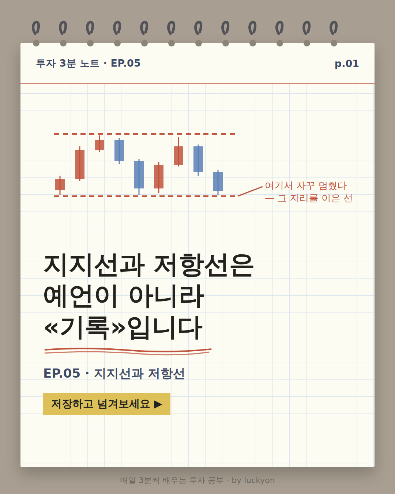
p.01 표지. 크림색 모눈 노트 위에 캔들 아홉 개가 위아래 두 개의 붉은 점선 사이를 오간다. 아래 점선을 가리키며 '여기서 자꾸 멈췄다 — 그 자리를 이은 선'이라는 주석이 붙어 있다. 큰 제목 '지지선과 저항선은 예언이 아니라 «기록»입니다', 부제 'EP.05 · 지지선과 저항선', 노란 형광펜 칩 '저장하고 넘겨보세요'.
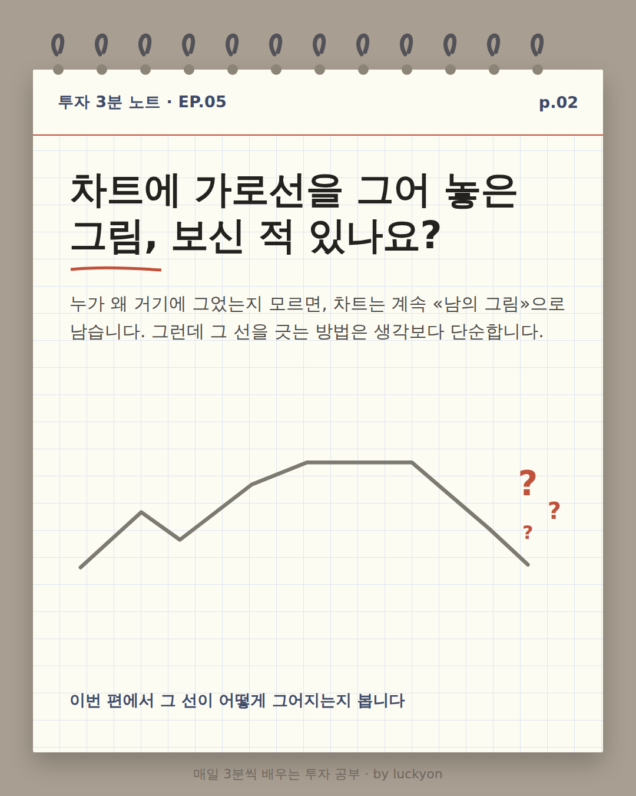
p.02 도입 카드. 제목 '차트에 가로선을 그어 놓은 그림, 보신 적 있나요?' 아래에 '누가 왜 거기에 그었는지 모르면 차트는 계속 남의 그림으로 남는다'는 본문이 있다. 그림은 회색 꺾은선 위에 붉은 점선 가로줄 두 개가 그어져 있고, 두 점선이 끝나는 오른쪽 바깥에 붉은 물음표 세 개가 찍혀 «이 선들이 무엇이냐»고 묻는다. 맨 아래 '이번 편에서 그 선이 어떻게 그어지는지 봅니다'.
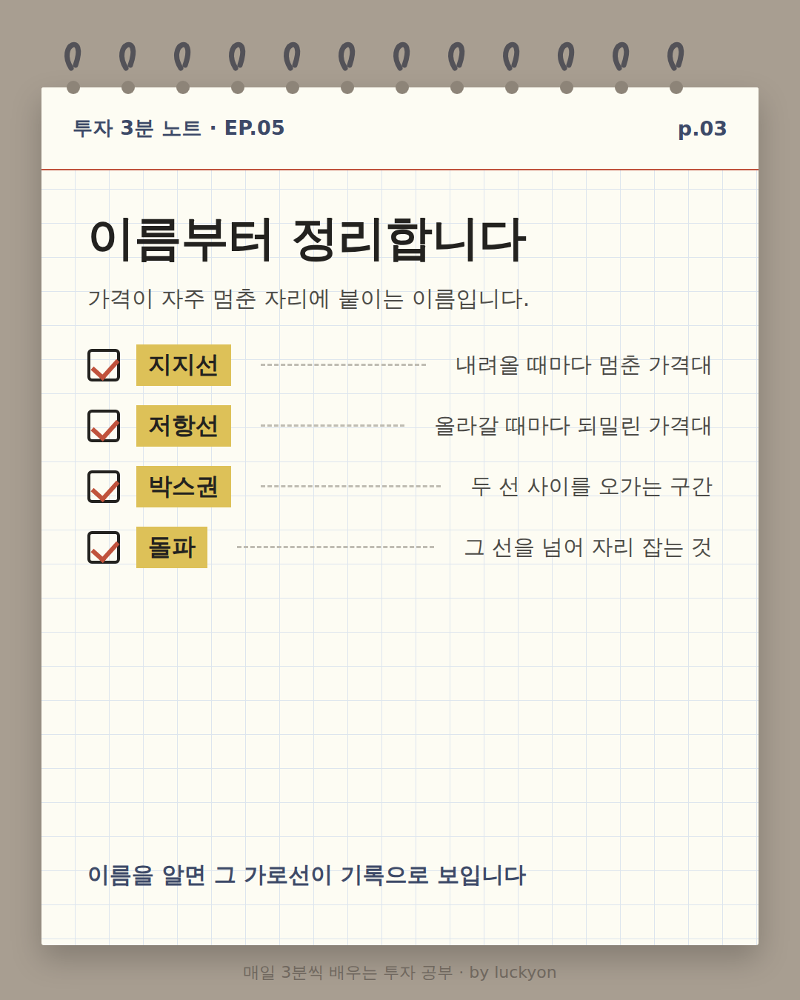
p.03 용어 정리 카드. 체크박스와 노란 형광펜 칩으로 네 항목이 나열돼 있다. 지지선 — 내려올 때마다 멈춘 가격대. 저항선 — 올라갈 때마다 되밀린 가격대. 박스권 — 두 선 사이를 오가는 구간. 돌파 — 그 선을 넘어 자리 잡는 것. 그 아래에 네 이름을 한 장에 모은 작은 그림이 있다. 붉은 점선 두 줄 사이가 옅은 회색 띠로 칠해져 있고, 감청색 꺾은선이 그 띠 안을 오르내리다가 오른쪽 끝에서 위 점선을 뚫고 올라간다. 왼쪽 바깥에 위에서부터 '저항선 · 박스권 · 지지선' 라벨이 세로로 붙어 있고, 뚫고 나가는 지점에는 붉은 동그라미와 '돌파' 라벨이 붙어 있다. 마무리 문구 '선 두 개를 그으면 나머지 둘은 따라옵니다'.
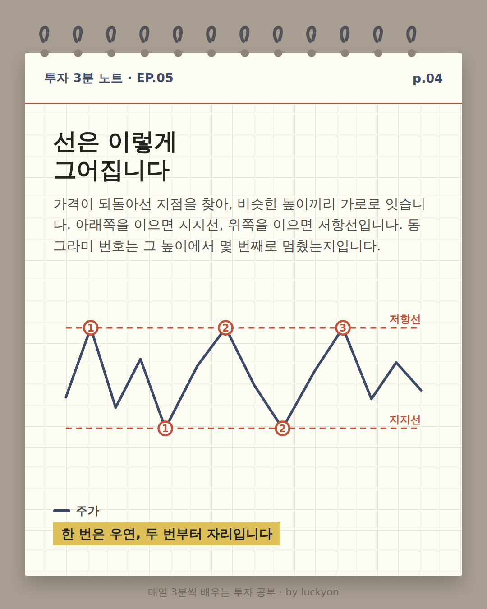
p.04 원리 카드. 감청색 꺾은선 하나가 위아래 두 개의 붉은 점선 사이를 오간다. 위 점선에는 '저항선', 아래 점선에는 '지지선' 라벨이 붙어 있다. 선이 각 점선에 닿은 자리마다 붉은 동그라미 안에 번호가 매겨져 있다 — 저항선에 ①②③ 세 번, 지지선에 ①② 두 번. 본문은 되돌아선 지점을 비슷한 높이끼리 잇는다고 설명하고 동그라미 번호가 그 높이에서 몇 번째로 멈췄는지라고 덧붙인다. 노란 형광펜 마무리 문구는 '한 번은 우연, 두 번부터 자리입니다'.
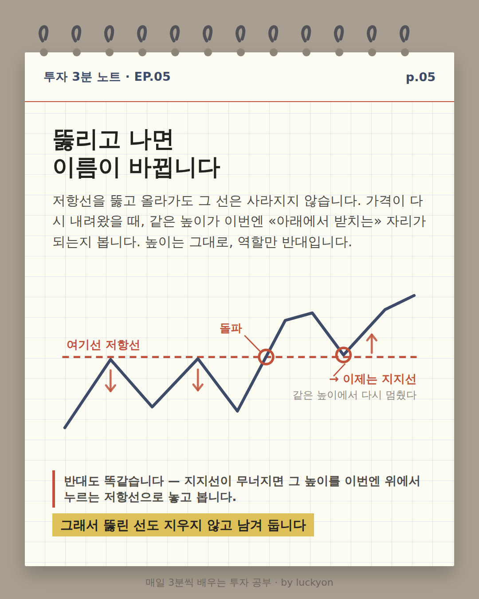
p.05 역할 반전 카드. 붉은 점선 가로줄이 딱 하나 그어져 있고, 감청색 꺾은선이 아래에서 올라와 그 선에 두 번 닿았다가 되밀린다. 되밀린 두 자리에는 아래를 가리키는 붉은 화살표가 붙어 있고, 선 위쪽 왼편에 '여기선 저항선'이라 적혀 있다. 세 번째로 올라온 선은 그 점선을 뚫고 올라가며, 뚫는 지점에 붉은 동그라미와 '돌파' 라벨이 붙어 있다. 이후 선이 다시 내려와 같은 점선 높이에서 멈추고 위로 튀어 오르는데, 그 자리에도 붉은 동그라미와 위를 가리키는 화살표가 있고 선 아래쪽 오른편에 '→ 이제는 지지선', 그 밑에 '같은 높이에서 다시 멈췄다'라고 적혀 있다. 그림 아래 붉은 세로줄이 그어진 문단에 '반대도 똑같습니다 — 지지선이 무너지면 그 높이를 이번엔 위에서 누르는 저항선으로 놓고 봅니다.' 노란 형광펜 마무리 문구는 '그래서 뚫린 선도 지우지 않고 남겨 둡니다'.
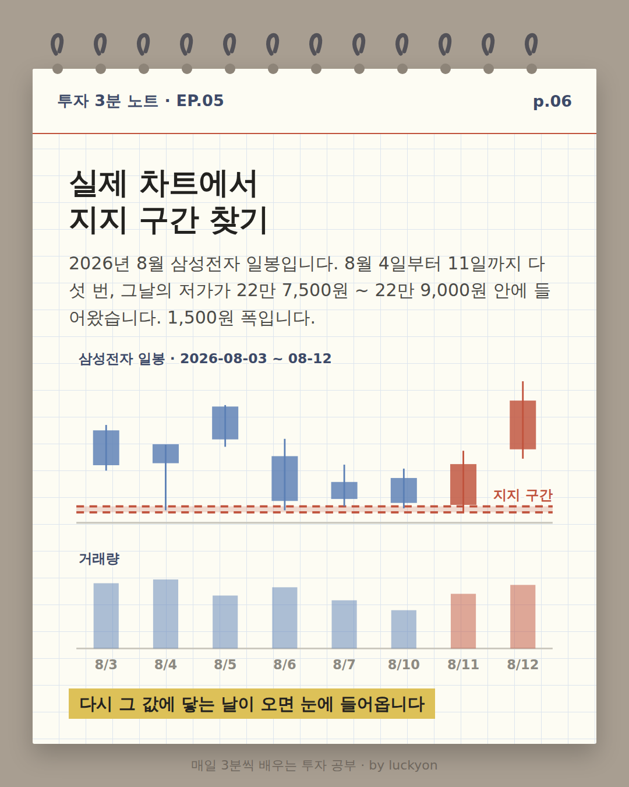
p.06 실제 사례 카드. 삼성전자 2026년 8월 3일부터 8월 12일까지 여덟 개의 일봉과 그 아래 거래량 막대가 두 칸으로 그려져 있다. 22만 7,500원에서 22만 9,000원 사이가 붉은 점선 두 줄로 좁게 표시돼 '지지 구간'이라 이름이 붙어 있고, x축에 8/3부터 8/12까지 여덟 거래일이 모두 찍혀 있다. 8월 4일·6일·7일·10일·11일 다섯 번의 저가가 그 구간까지 내려왔고, 8월 3일·5일·12일 저가는 그보다 위에서 멈춘다. 마무리 문구 '다시 그 값에 닿는 날이 오면 눈에 들어옵니다'.
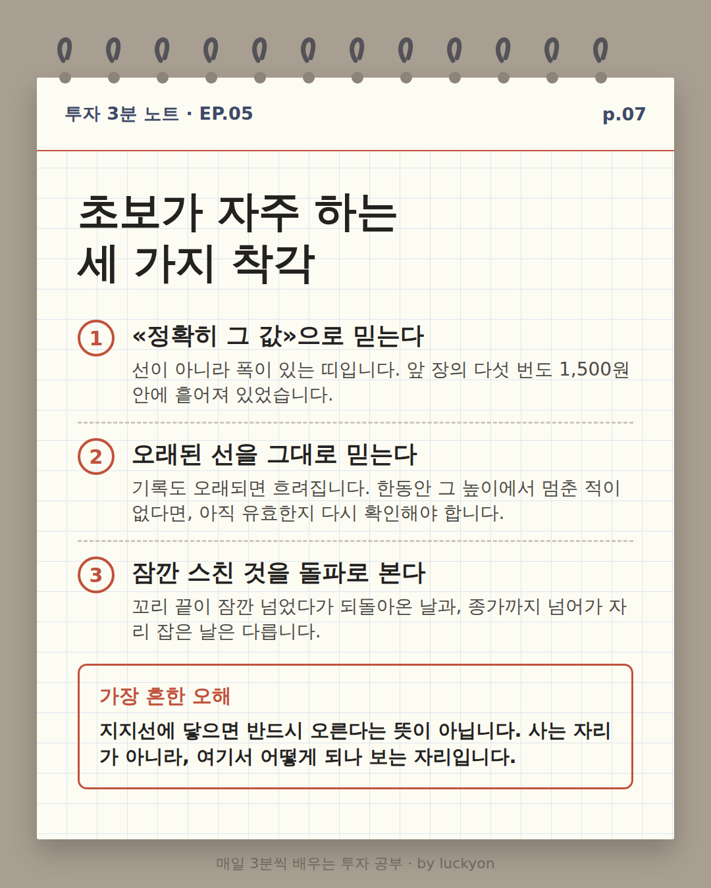
p.07 실수 카드. 번호 붙은 세 항목. 1. 정확히 그 값으로 믿는다 — 선이 아니라 폭이 있는 띠다. 2. 오래된 선을 그대로 믿는다 — 기록도 오래되면 흐려지므로, 한동안 그 높이에서 멈춘 적이 없다면 아직 유효한지 다시 확인해야 한다. 3. 잠깐 스친 것을 돌파로 본다 — 꼬리 끝이 잠깐 넘었다가 되돌아온 날과 종가까지 넘어가 자리 잡은 날은 다르다. 아래 붉은 테두리 상자에 '가장 흔한 오해 — 지지선에 닿으면 반드시 오른다는 뜻이 아닙니다. 사는 자리가 아니라, 여기서 어떻게 되나 보는 자리입니다'.
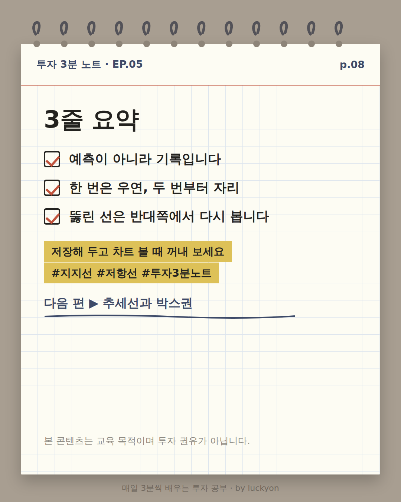
p.08 요약 카드. 체크박스 세 줄: 예측이 아니라 기록입니다 / 한 번은 우연, 두 번부터 자리 / 뚫리면 둘은 자리를 맞바꿉니다. 노란 형광펜 칩 두 개로 저장 유도와 해시태그, 그 아래 '다음 편 ▶ 추세선과 박스권', 맨 아래에 교육 목적 고지.
캡션 (599자)
차트 위 그 가로선, 누가 앞일을 맞혀서 그은 게 아닙니다.
가격이 여러 번 되돌아선 자리를 이은 «기록»입니다. 아래쪽을 이으면 지지선, 위쪽을 이으면 저항선이죠.
그리고 이번 편에서 꼭 가져가셨으면 하는 것 하나. 저항선을 뚫고 올라가도 그 선은 사라지지 않습니다. 가격이 다시 내려왔을 때 같은 높이가 이번엔 «아래에서 받치는» 자리가 되는지 봅니다. 높이는 그대로, 역할만 반대가 되는 거죠. 반대도 마찬가지입니다 — 지지선이 무너지면 그 자리는 위에서 누르는 저항선으로 바뀝니다.
실제 삼성전자 일봉으로도 확인했습니다. 2026년 8월 4일부터 11일까지 다섯 번, 그날의 저가가 22만 7,500원~22만 9,000원 안에 들어왔습니다. 1,500원 폭 안에 다섯 번이 모인 겁니다.
기억할 세 가지 ① 지지선·저항선은 예측이 아니라 기록 ② 한 번은 우연, 두 번부터 자리 ③ 뚫리면 둘은 자리를 맞바꾼다
p.01 Cover. On cream grid paper, nine candlesticks travel between two red dashed horizontal lines. An annotation points at the lower line: 'It kept stopping here — that's the line'. Headline 'Support & resistance don't predict. They record.', subtitle 'EP.05 · Support & resistance', yellow highlighter chip 'Save this and swipe'.
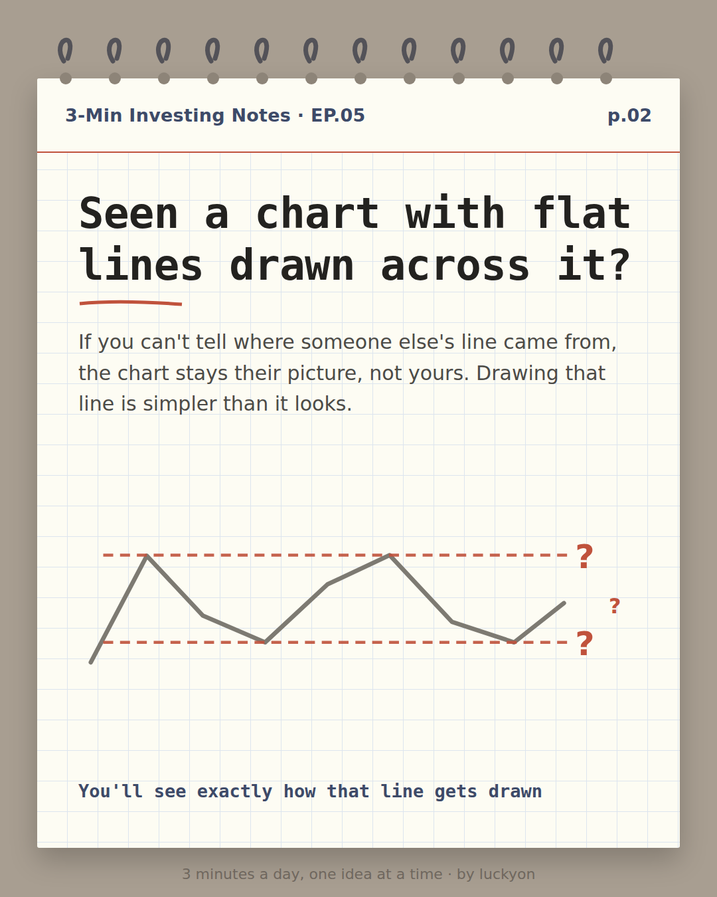
p.02 Intro card. Headline 'Seen a chart with flat lines drawn across it?' with body text explaining that if you can't tell where someone else's line came from, the chart stays their picture. The sketch shows a grey zigzag price line with two red dashed horizontal lines drawn across it, and three red question marks sitting just beyond where those dashed lines end, asking what the lines are. Footer line: 'You'll see exactly how that line gets drawn'.p.03 Vocabulary card headed 'Four names first'. Four checkbox rows with yellow highlighter chips. Support — price kept bouncing up here. Resistance — price kept getting turned back. Range — the zone between the two lines. Breakout — price settles past the line. Below them a small figure gathers all four names into one picture: two red dashed lines with a pale shaded band between them, a navy zigzag travelling inside that band and then punching up through the upper line at the right. Labels stack down the left margin — Resistance, Range, Support — and the punch-through point is circled in red and labelled 'Breakout'. Closing line: 'Draw the two lines and the other two follow'.
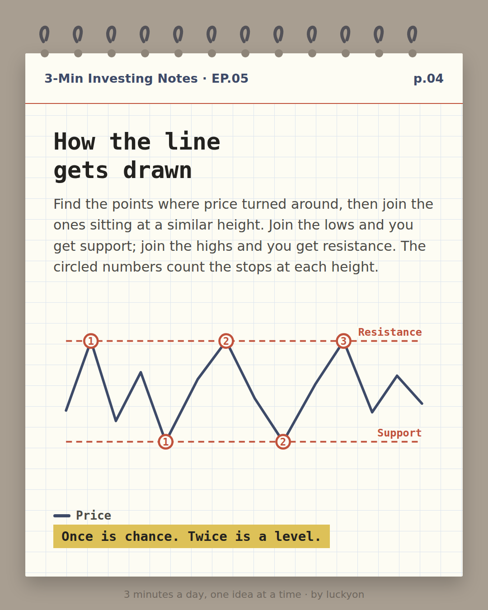
p.04 Mechanics card. A single navy line travels between two red dashed horizontal lines, labelled 'Resistance' above and 'Support' below. Every point where the line stops at one of those heights is marked with a red circled number — 1, 2 and 3 on resistance, 1 and 2 on support. Body text explains joining turning points that sit at a similar height and notes that the circled numbers count the stops. Yellow highlighter closing: 'Once is chance. Twice is a level.'p.05 Role-reversal card. A single red dashed horizontal line runs across the figure. A navy price line rises from the lower left, touches that line twice and is turned back both times — each rejection marked with a red downward arrow — and the space above the line on the left reads 'Here: resistance'. On the third rise the line punches through, with a red circle and a 'Breakout' label at the crossing point. Price then falls back to the very same height, stops there and turns up again; that point is circled in red with an upward arrow beside it, and below the line on the right it reads '→ now support' with 'stopped at the same height' underneath. Below the figure, a paragraph with a red rule down its left edge reads 'It runs both ways: when support gives way, you watch that height as resistance overhead.' Yellow highlighter closing: 'So a broken line stays on the chart'.
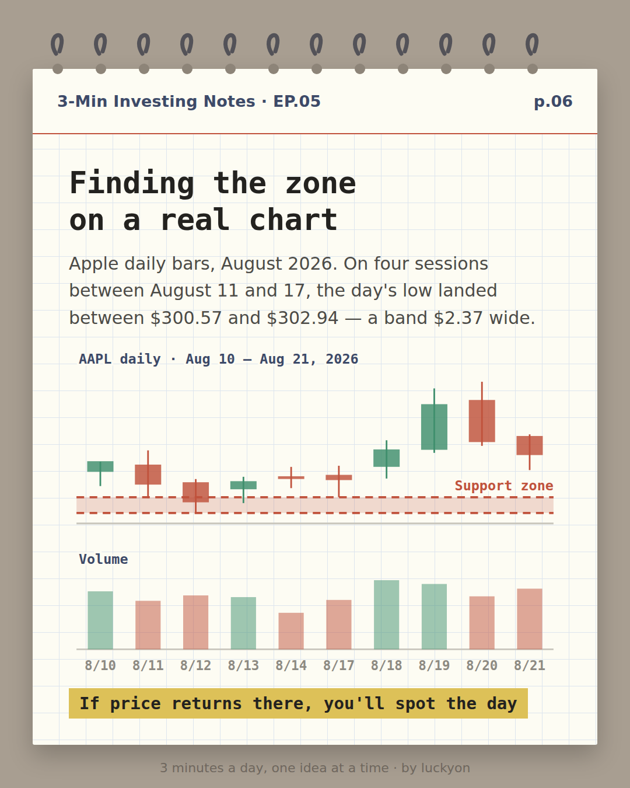
p.06 Real-chart card. Ten Apple daily candlesticks from August 10 to August 21, 2026, with a volume panel beneath. A red band between $300.57 and $302.94 is shaded and labelled 'Support zone', and every trading day from 8/10 to 8/21 is marked on the x-axis. On August 11, 12, 13 and 17 the day's low lands inside that band; August 10, 14, and 18 through 21 all stay above it. Closing line: 'If price returns there, you'll spot the day'.p.07 Mistakes card. Three numbered items. 1. Treating it as one exact price — it's a band, not a number. 2. Trusting a stale line — a record fades, so if price hasn't stopped at that height for a long stretch, check whether it still holds. 3. Calling every poke a breakout — a wick that pokes through and snaps back is not the same as a close that settles beyond the line. A red-bordered box below reads 'The biggest misconception — touching support doesn't mean price must rise. It's a place to watch what happens next, not a signal to act.'
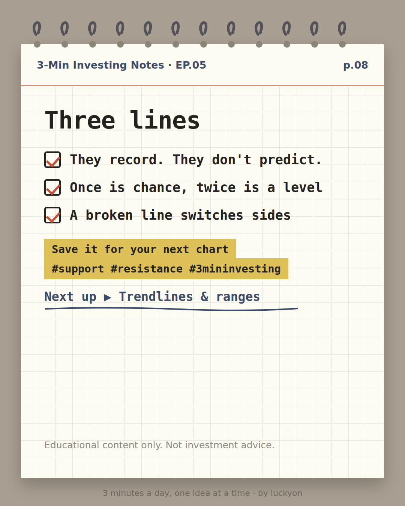
p.08 Recap card. Three checkbox lines: They record. They don't predict. / Once is chance, twice is a level / Break it and the two swap roles. Two yellow highlighter chips with a save prompt and hashtags, then 'Next up ▶ Trendlines & ranges', and an educational-purpose disclaimer at the bottom.
캡션 (1167자)
That flat line across the chart wasn't drawn by predicting anything.
It's a record: the heights where price turned around again and again. Join the lows and you get support; join the highs and you get resistance.
And here's the one idea worth keeping from this episode. Breaking above a resistance line doesn't erase it. When price falls back, you watch whether that same height now holds it up from below — same height, opposite job. It works the other way too: when a support level gives way, that height becomes a ceiling pressing down from above.
We checked it on real Apple daily bars as well. On four sessions between August 11 and 17, 2026, the day's low landed between $300.57 and $302.94 — four stops inside a band just $2.37 wide.
Three things to keep 1. Support and resistance record, they don't predict 2. Once is chance, twice is a level 3. Break it and the two swap roles
Save it and pull it up next time you open a chart 📌
![Vocabulary card headed 'Four names first'. Four checkbox rows with yellow highlighter chips. Support — price kept bouncing up here. Resistance — price kept getting turned back. Range — the zone between the two lines. Breakout — price settles past the line. Below them a small figure gathers all four names into one picture: two red dashed lines with a pale shaded band between them, a navy zigzag travelling inside that band and then punching up through the upper line at the right. Labels stack down the left margin — Resistance, Range, Support — and the punch-through point is circled in red and labelled 'Breakout'. Closing line: 'Draw the two lines and the other two follow'.](en/card3.png)
![Role-reversal card. A single red dashed horizontal line runs across the figure. A navy price line rises from the lower left, touches that line twice and is turned back both times — each rejection marked with a red downward arrow — and the space above the line on the left reads 'Here: resistance'. On the third rise the line punches through, with a red circle and a 'Breakout' label at the crossing point. Price then falls back to the very same height, stops there and turns up again; that point is circled in red with an upward arrow beside it, and below the line on the right it reads '→ now support' with 'stopped at the same height' underneath. Below the figure, a paragraph with a red rule down its left edge reads 'It runs both ways: when support gives way, you watch that height as resistance overhead.' Yellow highlighter closing: 'So a broken line stays on the chart'.](en/card5.png)
![Mistakes card. Three numbered items. 1. Treating it as one exact price — it's a band, not a number. 2. Trusting a stale line — a record fades, so if price hasn't stopped at that height for a long stretch, check whether it still holds. 3. Calling every poke a breakout — a wick that pokes through and snaps back is not the same as a close that settles beyond the line. A red-bordered box below reads 'The biggest misconception — touching support doesn't mean price must rise. It's a place to watch what happens next, not a signal to act.'](en/card7.png)